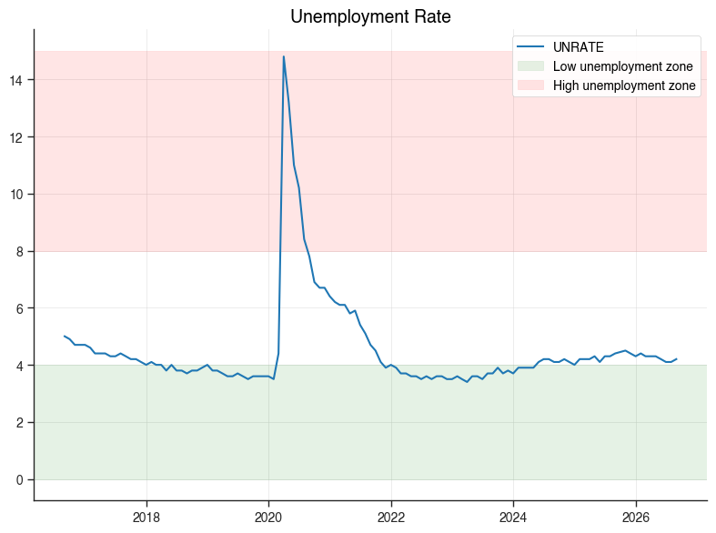

ChartBook Plotting Gallery#
This gallery demonstrates all chart types available in chartbook.plotting using
real economic data from FRED (Federal Reserve Economic Data).
Each example shows:
How to create the chart
Common customization options
Best practices for different use cases
Setup#
First, let’s import the required libraries and fetch some FRED data.
from datetime import datetime
import numpy as np
import pandas as pd
import chartbook
# For fetching FRED data
try:
import pandas_datareader.data as web
HAS_DATAREADER = True
except ImportError:
HAS_DATAREADER = False
print("pandas_datareader not installed. Using synthetic data.")
# Configuration
START_DATE = "2000-01-01"
END_DATE = datetime.now().strftime("%Y-%m-%d")
# FRED series we'll use
FRED_SERIES = {
"GDP": "GDP", # Gross Domestic Product
"UNRATE": "UNRATE", # Unemployment Rate
"CPIAUCSL": "CPIAUCSL", # Consumer Price Index
"FEDFUNDS": "FEDFUNDS", # Federal Funds Rate
"GS10": "GS10", # 10-Year Treasury Rate
"SP500": "SP500", # S&P 500
"DEXUSEU": "DEXUSEU", # USD/EUR Exchange Rate
"HOUST": "HOUST", # Housing Starts
}
def fetch_fred_data(series_ids: list[str], start: str, end: str) -> pd.DataFrame:
"""Fetch data from FRED or generate synthetic data."""
if HAS_DATAREADER:
try:
df = web.DataReader(series_ids, "fred", start, end)
df = df.reset_index()
df.columns = ["date"] + series_ids
return df
except Exception as e:
print(f"Error fetching FRED data: {e}")
print("Falling back to synthetic data.")
# Generate synthetic data
dates = pd.date_range(start=start, end=end, freq="MS")
np.random.seed(42)
data = {"date": dates}
for series in series_ids:
if series == "GDP":
# Trending upward with some noise
base = 10000 + np.arange(len(dates)) * 50
data[series] = base + np.random.randn(len(dates)) * 200
elif series == "UNRATE":
# Oscillating between 3-10%
data[series] = (
5
+ 2 * np.sin(np.arange(len(dates)) * 0.1)
+ np.random.randn(len(dates)) * 0.5
)
elif series == "CPIAUCSL":
# Trending upward (inflation)
base = 170 + np.arange(len(dates)) * 0.5
data[series] = base + np.random.randn(len(dates)) * 2
elif series == "FEDFUNDS":
# Interest rate cycles
data[series] = (
3
+ 2 * np.sin(np.arange(len(dates)) * 0.05)
+ np.random.randn(len(dates)) * 0.3
)
data[series] = np.clip(data[series], 0, 20)
elif series == "GS10":
# 10-year rate
data[series] = (
4
+ 1.5 * np.sin(np.arange(len(dates)) * 0.04)
+ np.random.randn(len(dates)) * 0.2
)
data[series] = np.clip(data[series], 0, 15)
elif series == "SP500":
# Stock market trending up with volatility
base = 1000 * np.exp(np.arange(len(dates)) * 0.003)
data[series] = base * (1 + np.random.randn(len(dates)) * 0.02)
elif series == "DEXUSEU":
# Exchange rate around 1.0-1.5
data[series] = (
1.2
+ 0.2 * np.sin(np.arange(len(dates)) * 0.03)
+ np.random.randn(len(dates)) * 0.02
)
elif series == "HOUST":
# Housing starts in thousands
data[series] = (
1500
+ 500 * np.sin(np.arange(len(dates)) * 0.08)
+ np.random.randn(len(dates)) * 100
)
data[series] = np.clip(data[series], 400, 2500)
else:
data[series] = np.random.randn(len(dates)).cumsum()
return pd.DataFrame(data)
# Fetch the data
print("Fetching economic data...")
economic_data = fetch_fred_data(
["GDP", "UNRATE", "CPIAUCSL", "FEDFUNDS", "GS10"], START_DATE, END_DATE
)
print(f"Loaded {len(economic_data)} rows of data")
economic_data.head()
Fetching economic data...
Loaded 321 rows of data
| date | GDP | UNRATE | CPIAUCSL | FEDFUNDS | GS10 | |
|---|---|---|---|---|---|---|
| 0 | 2000-01-01 | 10002.179 | 4.0 | 169.3 | 5.45 | 6.66 |
| 1 | 2000-02-01 | NaN | 4.1 | 170.0 | 5.73 | 6.52 |
| 2 | 2000-03-01 | NaN | 4.0 | 171.0 | 5.85 | 6.26 |
| 3 | 2000-04-01 | 10247.720 | 3.8 | 170.9 | 6.02 | 5.99 |
| 4 | 2000-05-01 | NaN | 4.0 | 171.2 | 6.27 | 6.44 |
Line Charts#
Line charts are ideal for time series data. They show trends and patterns over time.
Basic Line Chart#
chartbook.plotting.line(
economic_data.dropna(subset=["GDP"]),
x="date",
y="GDP",
title="U.S. Gross Domestic Product",
y_title="Billions of Dollars",
source="FRED",
)
Multi-Series Line Chart#
chartbook.plotting.line(
economic_data,
x="date",
y=["FEDFUNDS", "GS10"],
title="Interest Rates Comparison",
y_title="Percent",
labels={"FEDFUNDS": "Fed Funds Rate", "GS10": "10-Year Treasury"},
source="Federal Reserve Economic Data",
)
Line Chart with Horizontal Reference Lines#
chartbook.plotting.line(
economic_data,
x="date",
y="UNRATE",
title="U.S. Unemployment Rate",
y_title="Percent",
hlines=[
{"y": 5.0, "color": "green", "dash": "dash", "label": "Natural Rate (~5%)"},
# {"y": 10.0, "color": "red", "dash": "dot", "label": "Crisis Level"},
],
source="Bureau of Labor Statistics via FRED",
)
Line Chart with NBER Recession Shading#
Add recession bars to provide economic context for time series data.
chartbook.plotting.line(
economic_data.dropna(subset=["GDP"]),
x="date",
y="GDP",
title="GDP with Recession Shading",
y_title="Billions of Dollars",
nber_recessions=True,
source="FRED",
note="Shaded areas indicate NBER recession periods",
)
Bar Charts#
Bar charts are useful for comparing values across categories or discrete time periods.
Basic Bar Chart#
# Create annual data for bar chart
annual_data = economic_data.copy()
annual_data["year"] = annual_data["date"].dt.year
annual_gdp = annual_data.groupby("year")["GDP"].mean().reset_index()
annual_gdp = annual_gdp.tail(10) # Last 10 years
chartbook.plotting.bar(
annual_gdp,
x="year",
y="GDP",
title="Annual Average GDP (Last 10 Years)",
y_title="Billions of Dollars",
source="FRED",
)
Grouped Bar Chart#
# Create comparison data
annual_rates = annual_data.groupby("year")[["FEDFUNDS", "GS10"]].mean().reset_index()
annual_rates = annual_rates.tail(10)
chartbook.plotting.bar(
annual_rates,
x="year",
y=["FEDFUNDS", "GS10"],
title="Annual Average Interest Rates",
y_title="Percent",
labels={"FEDFUNDS": "Fed Funds", "GS10": "10-Year Treasury"},
source="FRED",
)
Stacked Bar Chart#
# Create fake component data for stacking example
gdp_components = annual_gdp.copy()
gdp_components["consumption"] = gdp_components["GDP"] * 0.68
gdp_components["investment"] = gdp_components["GDP"] * 0.18
gdp_components["government"] = gdp_components["GDP"] * 0.17
gdp_components["net_exports"] = gdp_components["GDP"] * -0.03
chartbook.plotting.bar(
gdp_components,
x="year",
y=["consumption", "investment", "government"],
stacked=True,
title="GDP Components (Simplified)",
y_title="Billions of Dollars",
labels={
"consumption": "Consumption",
"investment": "Investment",
"government": "Government",
},
source="Illustrative example",
)
Scatter Plots#
Scatter plots show relationships between two continuous variables.
Basic Scatter Plot#
# Use annual averages for cleaner scatter
scatter_data = annual_data.groupby("year")[["UNRATE", "CPIAUCSL"]].mean().reset_index()
# Calculate YoY inflation
scatter_data["inflation"] = scatter_data["CPIAUCSL"].pct_change() * 100
scatter_data = scatter_data.dropna()
chartbook.plotting.scatter(
scatter_data,
x="UNRATE",
y="inflation",
title="Phillips Curve: Unemployment vs Inflation",
x_title="Unemployment Rate (%)",
y_title="Inflation Rate (%)",
source="FRED",
note="Each point represents one year",
)
Scatter Plot with Regression Line#
chartbook.plotting.scatter(
scatter_data,
x="UNRATE",
y="inflation",
title="Phillips Curve with Regression Line",
x_title="Unemployment Rate (%)",
y_title="Inflation Rate (%)",
regression_line=True,
source="FRED",
)
Scatter Plot with Size Mapping#
# Add GDP as size dimension
scatter_gdp = annual_data.groupby("year")[["UNRATE", "GDP"]].mean().reset_index()
scatter_gdp["gdp_growth"] = scatter_gdp["GDP"].pct_change() * 100
scatter_gdp = scatter_gdp.dropna()
scatter_gdp = scatter_gdp.tail(20) # Last 20 years
# Create decade column for coloring
scatter_gdp["decade"] = (scatter_gdp["year"] // 10) * 10
scatter_gdp["decade"] = scatter_gdp["decade"].astype(str) + "s"
chartbook.plotting.scatter(
scatter_gdp,
x="UNRATE",
y="gdp_growth",
size="GDP",
color_by="decade",
title="Unemployment vs GDP Growth",
x_title="Unemployment Rate (%)",
y_title="GDP Growth (%)",
source="FRED",
note="Bubble size represents GDP level",
)
Area Charts#
Area charts emphasize the magnitude of values over time, especially useful for showing composition or cumulative totals.
Stacked Area Chart#
# Use the GDP components data
area_data = gdp_components.copy()
chartbook.plotting.area(
area_data,
x="year",
y=["consumption", "investment", "government"],
stacked=True,
title="GDP Components Over Time",
y_title="Billions of Dollars",
labels={
"consumption": "Consumption",
"investment": "Investment",
"government": "Government",
},
source="Illustrative example",
)
Non-Stacked Area Chart#
# Show interest rates as overlapping areas
rates_monthly = economic_data[["date", "FEDFUNDS", "GS10"]].dropna()
rates_monthly = rates_monthly.tail(120) # Last 10 years
chartbook.plotting.area(
rates_monthly,
x="date",
y=["FEDFUNDS", "GS10"],
stacked=False,
title="Interest Rate Trends",
y_title="Percent",
labels={"FEDFUNDS": "Fed Funds Rate", "GS10": "10-Year Treasury"},
source="FRED",
)
Pie Charts#
Pie charts show proportional composition. Use sparingly and only when showing parts of a whole.
Basic Pie Chart#
# GDP components as percentages
gdp_shares = pd.DataFrame(
{
"component": ["Consumption", "Investment", "Government", "Net Exports"],
"share": [68, 18, 17, -3],
}
)
gdp_shares["share_abs"] = gdp_shares["share"].abs()
chartbook.plotting.pie(
gdp_shares,
names="component",
values="share_abs",
title="GDP Composition by Component",
source="Bureau of Economic Analysis",
)
Dual-Axis Charts#
Dual-axis charts combine two different scales on the same plot. Use when comparing series with different units or scales.
Line + Line Dual Axis#
dual_data = economic_data[["date", "GDP", "UNRATE"]].dropna()
chartbook.plotting.dual(
dual_data,
x="date",
left_y="GDP",
right_y="UNRATE",
left_type="line",
right_type="line",
title="GDP vs Unemployment Rate",
left_y_title="GDP (Billions $)",
right_y_title="Unemployment Rate (%)",
source="FRED",
)
Bar + Line Dual Axis#
# GDP growth as bars, unemployment as line
gdp_growth = annual_data.groupby("year")[["GDP", "UNRATE"]].mean().reset_index()
gdp_growth["gdp_growth"] = gdp_growth["GDP"].pct_change() * 100
gdp_growth = gdp_growth.dropna().tail(15)
chartbook.plotting.dual(
gdp_growth,
x="year",
left_y="gdp_growth",
right_y="UNRATE",
left_type="bar",
right_type="line",
title="GDP Growth vs Unemployment",
left_y_title="GDP Growth (%)",
right_y_title="Unemployment Rate (%)",
source="FRED",
)
Advanced Features#
Confidence Bands#
# Create data with confidence intervals
forecast_data = economic_data[["date", "GDP"]].dropna().tail(60).copy()
forecast_data["upper"] = forecast_data["GDP"] * 1.05
forecast_data["lower"] = forecast_data["GDP"] * 0.95
forecast_data["forecast"] = forecast_data["GDP"] * (
1 + np.random.randn(len(forecast_data)) * 0.01
)
chartbook.plotting.line(
forecast_data,
x="date",
y="forecast",
title="GDP with Confidence Interval",
y_title="Billions of Dollars",
bands=[
{
"y_upper": "upper",
"y_lower": "lower",
"color": "blue",
"alpha": 0.2,
}
],
source="Illustrative forecast",
)
Custom Shaded Regions#
# Highlight a specific time period
recent_data = economic_data[["date", "UNRATE"]].dropna().tail(120)
chartbook.plotting.line(
recent_data,
x="date",
y="UNRATE",
title="Unemployment Rate with COVID Period Highlighted",
y_title="Percent",
shaded_regions=[
{
"x0": "2020-02-01",
"x1": "2021-06-01",
"color": "red",
"alpha": 0.15,
"label": "COVID-19 Impact",
}
],
source="Bureau of Labor Statistics via FRED",
)
Vertical Reference Lines#
chartbook.plotting.line(
recent_data,
x="date",
y="UNRATE",
title="Unemployment with Key Dates",
y_title="Percent",
vlines=[
{"x": "2020-03-01", "color": "red", "dash": "dash", "label": "COVID Start"},
{"x": "2022-03-01", "color": "green", "dash": "dash", "label": "Recovery"},
],
source="FRED",
)
Accessing Raw Figures#
ChartBook returns a ChartResult object that provides access to the underlying
Plotly figure and lazily-created matplotlib objects for fine-grained customization.
Plotly Figure Access#
# Create a chart
result = chartbook.plotting.line(
economic_data[["date", "GDP"]].dropna(),
x="date",
y="GDP",
title="GDP (Customizable)",
)
# Access the Plotly figure
fig = result.figure
# Customize with Plotly API
fig.update_layout(
title_font=dict(size=24, color="darkblue"),
plot_bgcolor="white",
)
fig.update_traces(
line=dict(width=3, color="navy"),
fill="tozeroy",
fillcolor="rgba(0, 0, 128, 0.1)",
)
# Display
# result.show()
Matplotlib Access (for static exports)#
# Create a chart
result = chartbook.plotting.line(
economic_data[["date", "UNRATE"]].dropna().tail(120),
x="date",
y="UNRATE",
title="Unemployment Rate",
)
# Access matplotlib objects (lazily created)
ax = result.mpl_axes
fig = result.mpl_figure
# Customize with matplotlib API
ax.axhspan(0, 4, alpha=0.1, color="green", label="Low unemployment zone")
ax.axhspan(8, 15, alpha=0.1, color="red", label="High unemployment zone")
ax.legend(loc="upper right")
fig.tight_layout()
# Show the matplotlib figure
fig.savefig("unemployment_custom.png", dpi=150, bbox_inches="tight")
print("Saved customized matplotlib figure to unemployment_custom.png")
Saved customized matplotlib figure to unemployment_custom.png

Best Practices Summary#
Use
.show()for exploration - Quick inline display without saving filesUse
.save()for production - Generates all formats with consistent namingAdd context - Use
source,note, andcaptionfor documentationChoose the right chart type:
Line: Time series, trends
Bar: Comparisons, discrete categories
Scatter: Relationships between variables
Area: Composition, cumulative values
Pie: Parts of a whole (use sparingly)
Dual: Different scales/units
Use overlays wisely:
NBER recessions for economic context
Reference lines for targets/thresholds
Shaded regions for notable periods
Bands for uncertainty/confidence intervals